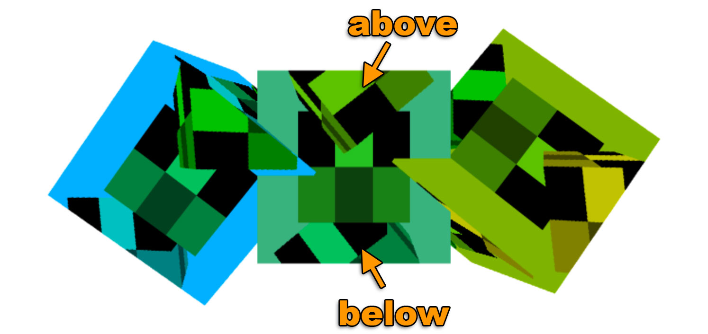

WebGL 텍스처 렌더링
이 포스트는 WebGL 관련 시리즈에서 이어집니다. 첫 번째는 기초로 시작했고, 이전에는 텍스처 데이터 제공에 관한 것이었습니다. 아직 읽지 않으셨다면 해당 글들을 먼저 읽어주세요.
지난 포스트에서 우리는 JavaScript에서 텍스처에 데이터를 제공하는 방법을 살펴봤는데요. 이번 글에서는 WebGL을 사용하여 텍스처에 렌더링할 겁니다. 참고로 이 주제는 이미지 처리에서 간단히 다루었지만 더 자세히 다뤄봅시다.
텍스처에 렌더링하는 것은 굉장히 간단합니다. 먼저 특정한 크기의 텍스처를 생성합니다.
// 렌더링을 위해 생성
const targetTextureWidth = 256;
const targetTextureHeight = 256;
const targetTexture = gl.createTexture();
gl.bindTexture(gl.TEXTURE_2D, targetTexture);
{
// level 0의 size와 format 정의
const level = 0;
const internalFormat = gl.RGBA;
const border = 0;
const format = gl.RGBA;
const type = gl.UNSIGNED_BYTE;
const data = null;
gl.texImage2D(
gl.TEXTURE_2D,
level,
internalFormat,
targetTextureWidth,
targetTextureHeight,
border,
format,
type,
data
);
// mips이 필요하지 않도록 필터링 설정
gl.texParameteri(gl.TEXTURE_2D, gl.TEXTURE_MIN_FILTER, gl.LINEAR);
gl.texParameteri(gl.TEXTURE_2D, gl.TEXTURE_WRAP_S, gl.CLAMP_TO_EDGE);
gl.texParameteri(gl.TEXTURE_2D, gl.TEXTURE_WRAP_T, gl.CLAMP_TO_EDGE);
}
어떻게 data가 null이 되는지 주목하세요.
어떤 데이터도 제공할 필요가 없습니다.
텍스처를 할당하기 위해 WebGL만 있으면 됩니다.
다음은 framebuffer를 생성합니다. Framebuffer는 그냥 attachment 모음입니다. Attachment는 텍스처나 renderbuffer입니다. 이전에 텍스처에 대해 살펴봤는데요. Renderbuffer는 텍스처와 매우 유사하지만 텍스처가 지원하지 않는 format과 option을 지원합니다. 또한 텍스처와 달리 shader에 대한 입력으로 renderbuffer를 직접 사용할 수 없습니다.
Framebuffer를 생성하고 텍스처에 첨부해봅시다.
// framebuffer 생성 및 바인딩
const fb = gl.createFramebuffer();
gl.bindFramebuffer(gl.FRAMEBUFFER, fb);
// 첫 번째 color attachment로 텍스처 첨부
const attachmentPoint = gl.COLOR_ATTACHMENT0;
gl.framebufferTexture2D(
gl.FRAMEBUFFER, attachmentPoint, gl.TEXTURE_2D, targetTexture, level);
텍스처와 버퍼처럼, framebuffer 생성 후 FRAMEBUFFER bind point에 바인딩 해야 합니다.
이후 framebuffer와 관련된 모든 함수들은 framebuffer가 바인딩된 곳을 참조합니다.
Framebuffer이 바인딩된 상태에서 gl.clear, gl.drawArrays, gl.drawElements를 호출할 때마다 WebGL은 캔버스 대신 텍스처에 렌더링합니다.
이전 렌더링 코드를 가져와서 함수로 만들어 두 번 호출할 수 있도록 해봅시다. 일단 텍스처에 렌더링하고 다시 캔버스에 렌더링합니다.
function drawCube(aspect) {
// program(shader 쌍) 사용 지시
gl.useProgram(program);
// position attribute 활성화
gl.enableVertexAttribArray(positionLocation);
// position buffer 바인딩
gl.bindBuffer(gl.ARRAY_BUFFER, positionBuffer);
// positionBuffer(ARRAY_BUFFER)에서 데이터 가져오는 방법을 position attribute에 지시
var size = 3; // 반복마다 3개의 컴포넌트
var type = gl.FLOAT; // 데이터는 32bit float
var normalize = false; // 데이터 정규화 안 함
var stride = 0; // 0 = 다음 위치를 가져오기 위해 반복마다 size * sizeof(type) 만큼 앞으로 이동
var offset = 0; // 버퍼의 처음부터 시작
gl.vertexAttribPointer(
positionLocation, size, type, normalize, stride, offset)
// texcoord attribute 활성화
gl.enableVertexAttribArray(texcoordLocation);
// texcoord buffer 바인딩
gl.bindBuffer(gl.ARRAY_BUFFER, texcoordBuffer);
// texcoordBuffer(ARRAY_BUFFER)에서 데이터 가져오는 방법을 texcoord attribute에 지시
var size = 2; // 반복마다 2개의 컴포넌트
var type = gl.FLOAT; // 데이터는 32bit float
var normalize = false; // 데이터 정규화 안 함
var stride = 0; // 0 = 다음 위치를 가져오기 위해 반복마다 size * sizeof(type) 만큼 앞으로 이동
var offset = 0; // 버퍼의 처음부터 시작
gl.vertexAttribPointer(
texcoordLocation, size, type, normalize, stride, offset)
// projection matrix 계산
- var aspect = gl.canvas.clientWidth / gl.canvas.clientHeight;
var projectionMatrix =
m4.perspective(fieldOfViewRadians, aspect, 1, 2000);
var cameraPosition = [0, 0, 2];
var up = [0, 1, 0];
var target = [0, 0, 0];
// lookAt을 사용하여 카메라 행렬 계산
var cameraMatrix = m4.lookAt(cameraPosition, target, up);
// camera matrix로 view matrix 만들기
var viewMatrix = m4.inverse(cameraMatrix);
var viewProjectionMatrix = m4.multiply(projectionMatrix, viewMatrix);
var matrix = m4.xRotate(viewProjectionMatrix, modelXRotationRadians);
matrix = m4.yRotate(matrix, modelYRotationRadians);
// 행렬 설정
gl.uniformMatrix4fv(matrixLocation, false, matrix);
// u_texture에 대해 texture unit 0을 사용하도록 shader에 지시
gl.uniform1i(textureLocation, 0);
// Geometry 그리기
gl.drawArrays(gl.TRIANGLES, 0, 6 * 6);
}
참고로 대상 텍스처가 캔버스와 다른 aspect를 가지기 때문에 projection matrix 계산을 위해 aspect를 전달해야 합니다.
호출하는 방법은 다음과 같습니다.
// 장면 그리기
function drawScene(time) {
...
{
// framebuffer를 바인딩하여 targetTexture에 렌더링
gl.bindFramebuffer(gl.FRAMEBUFFER, fb);
// 3x2 텍스처로 큐브 렌더링
gl.bindTexture(gl.TEXTURE_2D, texture);
// WebGL에 clip space에서 pixel로 변환하는 방법 지시
gl.viewport(0, 0, targetTextureWidth, targetTextureHeight);
// Attachment 지우기
gl.clearColor(0, 0, 1, 1); // 파란색으로 초기화
gl.clear(gl.COLOR_BUFFER_BIT| gl.DEPTH_BUFFER_BIT);
const aspect = targetTextureWidth / targetTextureHeight;
drawCube(aspect)
}
{
// 캔버스에 렌더링
gl.bindFramebuffer(gl.FRAMEBUFFER, null);
// 방금 렌더링한 텍스처로 큐브 렌더링
gl.bindTexture(gl.TEXTURE_2D, targetTexture);
// Clip space에서 pixel로 변환하는 방법을 WebGL에 지시
gl.viewport(0, 0, gl.canvas.width, gl.canvas.height);
// 캔버스와 depth buffer 지우기
gl.clearColor(1, 1, 1, 1); // 흰색으로 초기화
gl.clear(gl.COLOR_BUFFER_BIT | gl.DEPTH_BUFFER_BIT);
const aspect = gl.canvas.clientWidth / gl.canvas.clientHeight;
drawCube(aspect)
}
requestAnimationFrame(drawScene);
}
그리고 여기 결과입니다.
gl.viewport를 호출하여 렌더링하려는 대상의 크기로 설정하는 것은 매우 중요합니다.
이 경우 처음으로 텍스처에 렌더링하므로 텍스처를 덮도록 viewport를 설정하는데요.
두 번째는 캔버스에 렌더링하므로 캔버스를 덮도록 viewport를 설정합니다.
마찬가지로 projection matrix를 계산할 때 렌더링하려는 대상에 알맞은 aspect를 사용해야 합니다.
저는 무언가가 이상하게 렌더링되거나 아예 렌더링되지 않는 이유를 디버깅하는데 많은 시간을 쏟았는데, 최종적으로 gl.viewport 호출이나 올바른 aspect 계산을 누락했다는 것을 알게 되었습니다.
이는 누락하기 쉽기 때문에 저는 제 코드에서 gl.bindFramebuffer를 직접 호출하지 않고 있습니다.
대신에 다음과 같이 두 가지를 수행하는 함수를 만들었습니다.
function bindFramebufferAndSetViewport(fb, width, height) {
gl.bindFramebuffer(gl.FRAMEBUFFER, fb);
gl.viewport(0, 0, width, height);
}
그런 다음에는 해당 함수만을 이용하여 렌더링 대상을 변경합니다. 이렇게 하면 누락할 일이 없을 겁니다.
한 가지 알아야 할 점은 framebuffer에 depth buffer가 없다는 것입니다. 텍스처만 있죠. 이건 depth testing가 없으며 3D가 작동하지 않는다는 걸 의미합니다. 큐브 3개를 그리면 이런 것을 볼 수 있습니다.
가운데 있는 큐브를 보면 3개의 큐브가 수직으로 그려져 있는데, 하나는 뒤쪽에, 하나는 중앙에, 다른 하나는 앞쪽에 있지만, 우리는 3개 모두 같은 depth로 그리고 있습니다. 캔버스에 수평으로 그려진 3개의 큐브를 보면 서로 올바르게 교차하는 것을 알 수 있습니다. 이건 framebuffer는 depth buffer가 없지만 캔버스에는 있기 때문인데요.

Depth buffer를 추가하기 위해 하나를 생성하여 framebuffer에 연결해야 합니다.
// depth renderbuffer 생성
const depthBuffer = gl.createRenderbuffer();
gl.bindRenderbuffer(gl.RENDERBUFFER, depthBuffer);
// targetTexture와 같은 크기로 depth buffer 만들기
gl.renderbufferStorage(gl.RENDERBUFFER, gl.DEPTH_COMPONENT16, targetTextureWidth, targetTextureHeight);
gl.framebufferRenderbuffer(gl.FRAMEBUFFER, gl.DEPTH_ATTACHMENT, gl.RENDERBUFFER, depthBuffer);
그리고 이게 결과입니다.
이제 depth buffer가 framebuffer에 연결되었기 때문에 내부 큐브들이 올바르게 교차합니다.

WebGL이 3개의 attachment 조합 동작만 보장한다는 점을 유의해야 합니다. 명세서에 따르면 보장되는 attachment 조합은 다음과 같습니다.
COLOR_ATTACHMENT0=RGBA/UNSIGNED_BYTEtextureCOLOR_ATTACHMENT0=RGBA/UNSIGNED_BYTEtexture +DEPTH_ATTACHMENT=DEPTH_COMPONENT16renderbufferCOLOR_ATTACHMENT0=RGBA/UNSIGNED_BYTEtexture +DEPTH_STENCIL_ATTACHMENT=DEPTH_STENCILrenderbuffer
다른 조합의 경우 사용자의 system/gpu/driver/browser가 해당 조합을 지원하는지 확인해야 하는데요. Framebuffer를 만들었는지 확인하려면, attachment를 생성하고 첨부한 다음 아래와 같이 호출합니다.
var status = gl.checkFramebufferStatus(gl.FRAMEBUFFER);
상태가 FRAMEBUFFER_COMPLETE라면 해당 attachment 조합은 해당 사용자에 대해 작동합니다.
그렇지 않으면 작동하지 않으니 사용자에게 알리거나 다른 방법으로 fallback하는 등의 작업을 해야 합니다.
아직 모르겠다면 less code more fun을 읽어주세요.